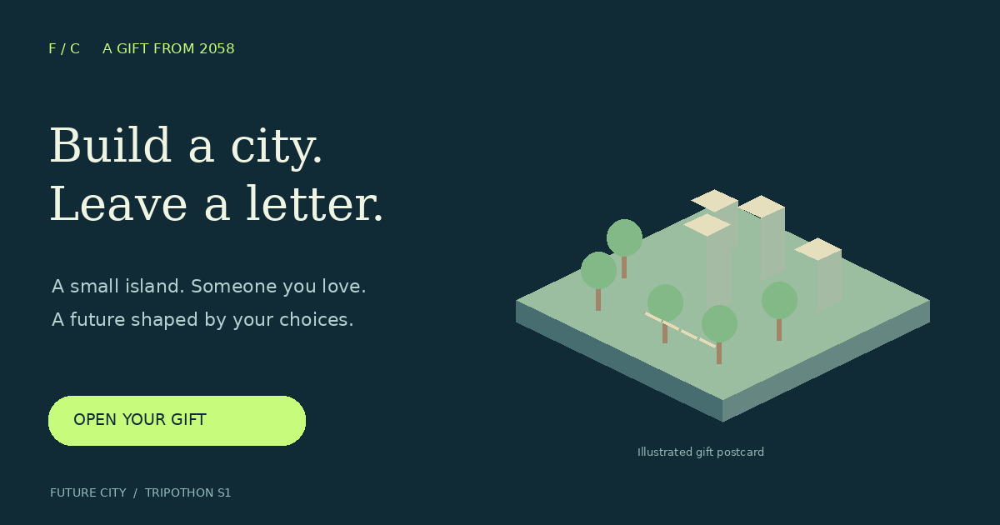

WHO WILL YOU BUILD FOR?Build a city.
Build a city.
Leave a letter.
Your choices become a letter to someone you love.

Your gift is still here.
This device could not start 3D graphics. You can read the letter and use every district control below. Try a WebGL-enabled browser to explore the island.
Demo walkthrough and recording guideLETTERS FROM 2058
“What will you leave for us?”
A voice from tomorrowYOUR LEGACY25/100
Reach 70 legacy by 2058.
Six districts. Every vital 50+.
2050 · 8 years remaining